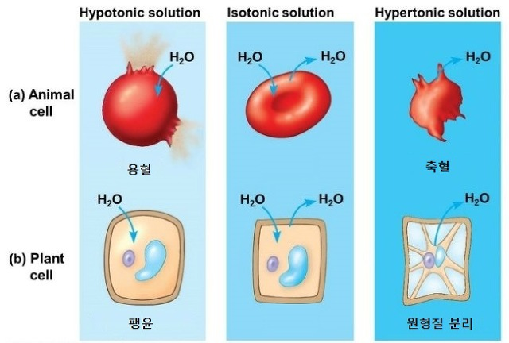

확산
-물질들이 높은 농도의 지역으로부터 낮은 농도의 지역으로 자발적으로 이동하는 것
-각 분자들이 무작위적 방향으로 움직이고 있음에도 불구하고 농도가 높은 곳에서 낮은 곳으로 분자들의 순 이동을 발생시킨다.
-열역학 제 2법칙에 따르면 자발적 엔트로피, 즉 무질서를 증가시키는 방향으로 진행된다. 엔트로피 증가는 자유에너지 감소와 같은 의미를 나타낸다.
따라-따라서 확산은 자연계에서 시스템이 가능한 최소의 에노지 상태로 움직이려는 경향을 대표한다고 할 수 있다.
-단순확산은 생체막을 통한 수동수송법의 일종으로 수송체를 중개하지 않는다.
-촉진확산은 세포막에서 전하를 띠고 있는 이온이나 분자량이 큰 물질을 이동하는 방법이다.
삼투
-선택적 투과막을 통한 물의 확산
-식물세포의 막은 선택적 투과성을 나타냄.
즉, 이들은 물과 하전되지 않는 작은 물질의 이동은 비교적 쉽게 허용하지만, 커다란 용질과 하전된 물질의 이동은 쉽게 허용되지 않는다.
세포를 둘러싼 용액에 비해 세포내의 용질 농도가 높은 경우, 물은 세포 내로 확산되어 들어가지만 용질은 세포 밖으로 희석되어 나올 수 없다.
-삼투에서는 막으로 인해 용질 이동에 사용하는 부피가 제한되기 때문에 막을 통해 용매의 부피가 확산되어 용질을 희석함으로써 엔트로피의 최대화를 실현한다.
실제로 상쇄되는 힘이 없다면 이용가능한 모든 물은 막의 용질 쪽으로 흘러갈 것이다.
-선택적 투과막의 존재는 다음 두 가지중 어느 하나가 일어날 때 까지 물의 순이동이 계속 될 것임을 의미한다.
>선택적 투과막이 파열되서 용질들이 자유롭게 확산할 떄까지 세포가 팽창한다.
>세포벽의 존재로 인해 세포 부피의 팽창이 기계적으로 제한되며 이에 따라 세포로 들어가려는 물의 추진력과 세포벽이 가하는 압력이 같아진다.

실험 1. 반투막을 이용한 삼투현상과 물의 확산
실험 2. 동물세포(적혈구)용혈 현상
참고문헌
캠벨 생명과학, 캠벨, 바이오 사이언스
식물생리학, 이진범, 라이프 사이언스
식품화학, 안승요, 교문사